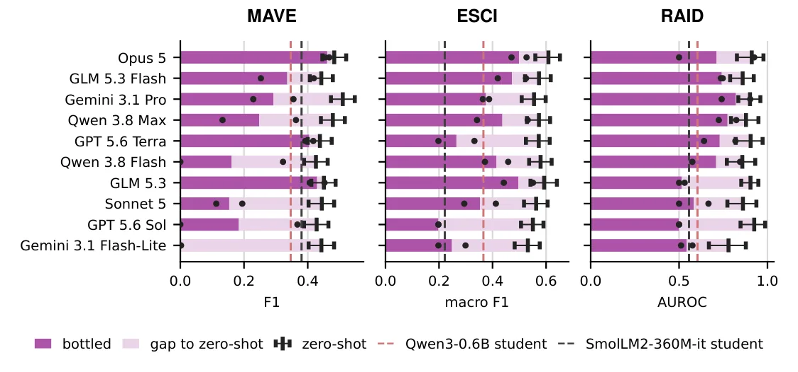
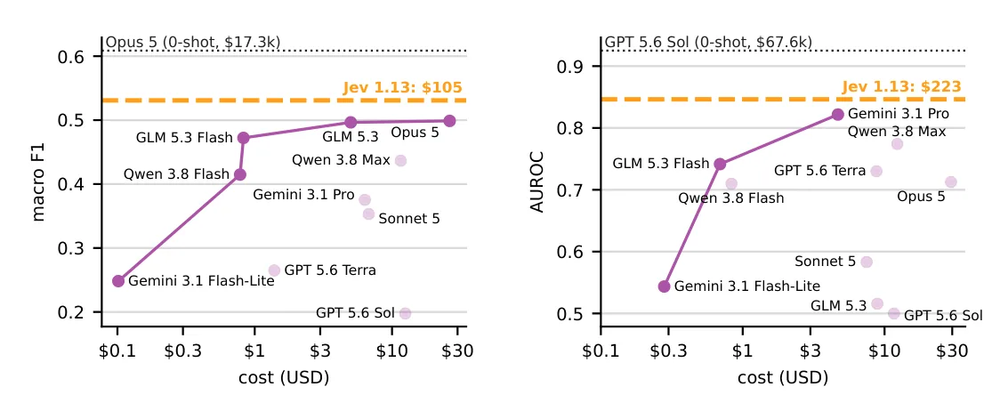

O problema da repetição cara
Imagine que você precisa classificar a relevância de dez milhões de pares produto-consulta em um catálogo de e-commerce. Você pode chamar um LLM grande e caro para cada par, mas o custo cresce linearmente: dez milhões de chamadas custam dez milhões de vezes o preço unitário. O paradoxo é que cada tarefa usa apenas um subconjunto estreito das capacidades gerais do modelo. Você está pagando por uma Ferrari para fazer entregas locais.
A solução óbvia é treinar um modelo pequeno especializado ou escrever um programa reutilizável. Mas isso exige engenharia humana: alguém precisa coletar exemplos rotulados, escolher uma arquitetura, ajustar hiperparâmetros. O que este paper pergunta é: um agente de LLM consegue fazer isso sozinho? Dado um lote inteiro de instâncias não rotuladas e um orçamento fixo de tempo, compute e tokens de API, o agente consegue criar um artefato barato que resolva o lote todo com qualidade aceitável?
Os autores chamam essa capacidade de bottling, em analogia a engarrafar: transformar capacidades gerais e caras em uma solução específica, reutilizável e barata. O termo evoca a ideia de capturar algo valioso em um recipiente que pode ser usado repetidamente. Bottling testa um aspecto de inteligência: a habilidade de reconhecer que problemas relacionados permitem amortizar esforço, investindo recursos iniciais para economizar no longo prazo.
O benchmark BOTTLED
Para avaliar bottling, os autores criaram o BOTTLED, um benchmark que entrega ao agente um workload completo e não rotulado, junto com três restrições: um limite de tempo de parede (wall-clock), um limite de compute (medido em segundos de CPU e GPU) e um orçamento de tokens de API para chamadas a LLMs externos. O agente escolhe sua própria abordagem: pode treinar um modelo pequeno, escrever um programa reutilizável, gerar labels com few-shot learning, ou qualquer combinação.
O benchmark usa três tarefas reais. MAVE (Multi-Attribute Value Extraction) pede para extrair pares atributo-valor de descrições de produtos, como extrair 'cor: preto' de 'smartphone preto 128GB'. ESCI (Shopping Queries Dataset) classifica a relevância de um produto para uma consulta de busca em quatro níveis, de exato a irrelevante. RAID (Regulatory Approval Information Detection) detecta se um documento de ensaio clínico menciona aprovação regulatória, retornando uma confiança entre zero e um.
Cada tarefa tem um workload de dezenas de milhares de instâncias. O orçamento de tokens é fixado em cinco milhões, o mesmo para todos os modelos. O orçamento de compute é de 24 horas de CPU e 2 horas de GPU. Antes que qualquer orçamento se esgote, o agente deve escrever todas as previsões em um arquivo out.txt. Se o arquivo estiver incompleto ou ausente, instâncias faltantes recebem respostas de fallback que não carregam informação: string vazia para MAVE, label uniforme para ESCI, confiança de 0.5 para RAID.
Baselines: zero-shot e destilação ingênua
Para contextualizar o desempenho de bottling, os autores definem dois baselines. O primeiro é o modo zero-shot: o LLM recebe uma instância de cada vez, sem ferramentas ou comportamento agêntico, apenas geração de próximo token. Como avaliar zero-shot no workload inteiro seria proibitivamente caro, os autores amostram mil instâncias uniformemente. Esse baseline mede o conhecimento bruto do LLM sobre a tarefa.
O segundo baseline é uma destilação ingênua de modelo pequeno (SLM distillation). Aqui, os autores gastam exatamente os mesmos cinco milhões de tokens do orçamento de bottling, mas sem decisões agênticas. Eles usam GLM 5.3 Flash para rotular instâncias amostradas uniformemente até esgotar o orçamento, depois fazem fine-tuning de dois modelos pequenos (Qwen3-0.6B e SmolLM2-360M-Instruct) nos labels gerados, e aplicam esses modelos ao workload completo. Hiperparâmetros seguem receitas publicadas, sem tuning.
Esse baseline pergunta: gastar os mesmos tokens em um script fixo e agnóstico à tarefa funciona melhor que dar autonomia a um agente? É uma pergunta honesta. Se a resposta for sim, bottling não vale a complexidade adicional.
Dez modelos, três tarefas, sessenta corridas
Os autores testaram dez modelos de linguagem: Gemini 3.1 Flash-Lite, GPT 5.6 Sol, Sonnet 5, GLM 5.3, Qwen 3.8 Flash, GPT 5.6 Terra, Qwen 3.8 Max, Gemini 3.1 Pro, GLM 5.3 Flash e Opus 5. Cada modelo rodou em cada uma das três tarefas, duas vezes, totalizando sessenta corridas de bottling. Cada corrida também foi avaliada em modo zero-shot nas mil instâncias amostradas.
Para agregar resultados entre tarefas com métricas diferentes (F1, macro-F1, AUROC), os autores normalizaram cada métrica. Definiram um baseline trivial (só respostas de fallback) e um teto teórico (labels de ouro). O ganho relativo de um modelo é a fração do intervalo baseline-teto que ele fecha. O score agregado R(M) é a média desses ganhos sobre as três tarefas. Um modelo que só produz fallback marca zero; um que acerta tudo marca um.

Resultados: zero-shot não garante bottling
A descoberta central é que desempenho zero-shot forte não se traduz de forma confiável em capacidade de bottling forte. Modelos com scores zero-shot similares podem divergir substancialmente após bottling. Dos sessenta runs de bottling, quarenta e oito ficaram abaixo do limite inferior do intervalo de confiança de 95% do desempenho zero-shot do próprio modelo. Isso significa que a maioria dos agentes não conseguiu preservar o conhecimento do modelo base ao criar o artefato.
Pior: trinta e um dos sessenta runs tiveram desempenho inferior ao melhor dos dois baselines de destilação ingênua (Qwen3-0.6B ou SmolLM2-360M-Instruct) com o mesmo orçamento de tokens. Em outras palavras, para mais da metade das corridas, teria sido melhor simplesmente gastar os tokens rotulando dados aleatórios e treinando um modelo pequeno fixo, sem nenhuma decisão agêntica.
A Figura 2 mostra isso tarefa por tarefa. Em MAVE (extração de atributos), a maioria dos modelos bottled fica bem abaixo do zero-shot. Em ESCI (relevância produto-consulta), a queda é menor mas ainda presente. Em RAID (detecção de aprovação regulatória), alguns modelos conseguem manter o desempenho, mas outros colapsam. Não há padrão claro: o mesmo modelo pode engarrafar bem em uma tarefa e mal em outra.

Quando bottling funciona: economia radical de custo
Apesar dos resultados mistos, bottling pode gerar economias substanciais quando funciona. Em ESCI, o Opus 5 alcançou um macro-F1 médio de 0.499 após bottling, com custo reportado de 26.28 dólares. Em comparação, o zero-shot do Opus 5 marcou 0.609 de macro-F1, mas o custo estimado para processar o workload inteiro seria 17.273 dólares. Isso significa reter aproximadamente 82% do desempenho zero-shot a cerca de 1/657 do custo.
Os autores também compararam com Jev, um modelo especializado recém-lançado construído especificamente para inferência barata e repetitiva. Jev é o que eles chamam de 'system one model': rápido, automático, especializado. Em ESCI, Jev alcançou macro-F1 de 0.531 com custo projetado de 105 dólares para o workload completo. O Opus 5 bottled recuperou cerca de 94% do desempenho do Jev a aproximadamente um quarto do custo do Jev.
Isso é notável: um agente de propósito geral, dado um orçamento limitado, conseguiu criar um artefato que compete com um modelo construído sob medida para exatamente esse tipo de tarefa, e ainda assim sai mais barato. Claro, isso aconteceu em apenas uma das três tarefas, mas demonstra o potencial da abordagem.
Por que os agentes falham em bottling?
O paper não faz uma análise qualitativa profunda das falhas, mas os números sugerem alguns padrões. Primeiro, muitos agentes simplesmente esgotam o orçamento de tokens sem produzir saída completa. Isso indica falhas de planejamento: o agente gasta tokens explorando abordagens ou refinando artefatos, mas não reserva recursos suficientes para aplicar o artefato ao workload inteiro. É um problema de balanceamento exploração-exploração (exploration-exploitation).
Segundo, mesmo quando os agentes produzem saída completa, a qualidade frequentemente fica abaixo do baseline de destilação ingênua. Isso sugere que as decisões agênticas — escolher que tipo de artefato criar, quantos exemplos rotular, quando parar de refinar — muitas vezes são subótimas. Um script fixo que simplesmente rotula dados uniformemente e treina um modelo pequeno com hiperparâmetros padrão acaba sendo mais robusto.
Terceiro, modelos mais caros não necessariamente engarrafam melhor. A Figura 1 (direita) mostra a fronteira de Pareto custo-desempenho. Vários modelos mais baratos dominam modelos mais caros: alcançam desempenho igual ou superior a custo menor. Isso quebra a intuição de que pagar mais por um modelo mais capaz sempre compensa. Para bottling, capacidade zero-shot e custo não predizem sucesso de forma confiável.

O que o paper não mostra
BOTTLED avalia apenas três tarefas, todas de classificação ou extração estruturada. Não sabemos como bottling se comporta em tarefas de geração aberta, raciocínio complexo ou domínios multimodais. O benchmark também fixa orçamentos arbitrários (cinco milhões de tokens, 24 horas de CPU, 2 horas de GPU). Não há análise de sensibilidade: como o desempenho muda se dobrarmos ou cortarmos pela metade esses orçamentos?
O paper não investiga quais estratégias os agentes adotam. Não sabemos quantos tentam treinar modelos pequenos versus escrever programas versus fazer prompt engineering. Não há ablation studies isolando componentes do comportamento agêntico. Também não há análise de por que certos modelos engarrafam bem em uma tarefa mas mal em outra. Essas são perguntas abertas para trabalho futuro.
Finalmente, o benchmark assume que o agente recebe o workload inteiro de uma vez. Na prática, workloads podem chegar em streaming, exigindo decisões online sobre quando investir em um artefato. BOTTLED também não considera cenários onde o workload muda ao longo do tempo, exigindo atualização ou retreinamento do artefato. Essas extensões tornariam o problema mais realista, mas também mais difícil.
Por que bottling importa além de LLMs
Os autores argumentam que bottling importa além do paradigma atual de modelos de linguagem. A intuição vem da 'amarga lição' de Rich Sutton: métodos gerais que escalam com compute tendem a superar métodos dedicados no longo prazo. Se isso continuar verdade, o sistema mais capaz para qualquer tarefa será provavelmente um generalista grande e caro.
Mas se o sistema mais capaz também é o mais caro, surge um problema prático: você não pode usá-lo para tudo. Bottling resolve esse problema: o sistema caro cria soluções dedicadas que retêm seu desempenho a uma fração do custo. Isso escala melhor que engenharia humana porque o sistema pode adaptar-se a novas tarefas mais rápido e em maior volume que especialistas humanos.
Essa visão assume que a tendência de Sutton continua: que generalistas continuarão dominando em capacidade, mesmo que não em eficiência. Se, ao contrário, modelos especializados alcançarem generalistas em capacidade, bottling perde relevância. Mas enquanto houver um trade-off entre capacidade e custo, bottling permanece uma habilidade valiosa.
Implicações práticas e direções futuras
BOTTLED fornece uma base para avaliar e melhorar a capacidade de agentes de investir recursos limitados em soluções reutilizáveis. Os resultados atuais mostram que a maioria dos agentes ainda não é eficaz em bottling, mas alguns casos de sucesso demonstram o potencial. Melhorias devem primeiro evitar falhas agênticas básicas — como esgotar o orçamento sem produzir saída — e depois aumentar a qualidade do artefato.
Uma direção natural é desenvolver harnesses melhores que guiem o agente sem remover autonomia. Outra é treinar modelos explicitamente para bottling, talvez via reinforcement learning com recompensas baseadas em custo-benefício. Também seria valioso entender quais tarefas são mais 'engarrafáveis': características que tornam uma tarefa mais ou menos adequada para bottling.
Do ponto de vista prático, bottling poderia automatizar a adaptação de sistemas a novas tarefas repetitivas, reduzindo a engenharia humana necessária. Isso tem valor direto para empresas que processam grandes volumes de dados estruturados: catálogos de produtos, documentos legais, registros financeiros. Se agentes conseguirem criar artefatos de qualidade de forma confiável, o custo de adicionar uma nova tarefa ao pipeline cai drasticamente.
Mas os resultados também servem de aviso: autonomia não é gratuita. Dar a um agente a liberdade de escolher sua abordagem pode levar a decisões piores que um script fixo e bem testado. Bottling só vale a pena quando os agentes são bons o suficiente para superar baselines ingênuos. Por enquanto, isso acontece apenas às vezes.
O que fica
- Bottling é a capacidade de um agente LLM criar artefatos baratos e reutilizáveis para workloads repetitivos, equilibrando qualidade e custo amortizado.
- Desempenho zero-shot forte não garante boa capacidade de bottling: 48 de 60 runs ficaram abaixo do intervalo de confiança do zero-shot do próprio modelo.
- Quando funciona, bottling gera economia radical: Opus 5 reteve 82% do F1 zero-shot em ESCI a 1/657 do custo, competindo com modelos especializados.
- 31 de 60 runs tiveram desempenho pior que baselines de destilação ingênua, mostrando que autonomia agêntica nem sempre supera scripts fixos e simples.
Paper original: Agent in a Bottle: Can LLM Agents Turn Their Capabilities Into Cheap, Scalable Artifacts?
Comentários
Nenhum comentário ainda. Seja o primeiro.